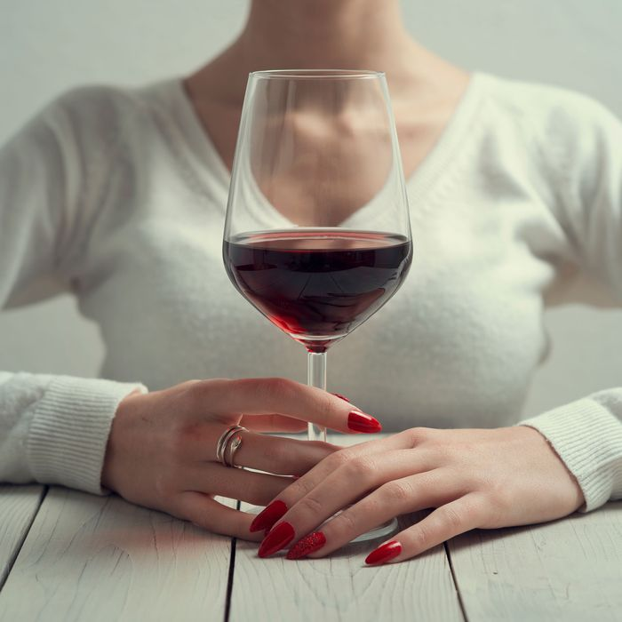

Everything to Know About Alcohol and Coronavirus
My guess is almost everyone someone who, early on in the coronavirus crisis, posted to Facebook or Instagram a grainy text screenshot claiming that drinking strong alcohol kills the virus in our stomachs, just as using hand sanitizer with high alcohol content kills it on our skin.As the World Health Organization was quick to point out, this is not true.Welcome fantasy though it might be for some, drinking alcohol does not prevent or protect against the coronavirus.
In fact, public-health experts have warned that excessive and/or frequent drinking weakens the immune system, making it easier to get sick at a time when it’s critical not to.Meanwhile, alcohol sales enjoyed a 55 percent increase in late March, as many Americans sought to temper the anxiety and boredom in stay-at-home orders.
Now, some states have even welcomed their citizens back into bars as part of the country’s plan to reopen the economy.But a few states (such as California, Florida, Texas, and Washington) reversed their plans when coronavirus cases surged, particularly in younger people.Other states, like New Jersey and New York, have postponed their plans to reopen indoor dining spaces indefinitely.
Many of us are understandably reaching for our preferred coping mechanisms right now, but here’s what you need to know about how drinking might affect your risk level for coronavirus.
Does drinking alcohol mean I’m more likely to get COVID-19?We don’t know yet, but that’s not necessarily cause for celebration.'There is no direct research that I’m aware of in relation to alcohol and COVID-19,' says Gregory A.Poland, an expert in infectious diseases and professor of medicine at the Mayo Clinic.'But the absence of research doesn’t mean the absence of harm.'
What experts
do know is how alcohol overuse impacts the immune system more broadly, and from that, what might be reasonable to assume about alcohol overuse and the coronavirus — which, though new, is not entirely unlike other respiratory infections that
have been well researched.
How does alcohol impact the immune system?Critically, there’s a difference between alcohol use and alcohol
mis use — though the line between them can be somewhat nebulous.'There’s really good evidence that short-term alcohol misuse — binge drinking — can suppress optimal immune function, suppress the ability to defend against the respiratory infection in the short run,' says Kathy Jung, director of the National Institute of Alcohol Abuse and Alcoholism division of metabolism and health effects.Binge drinking is defined as four or more drinks for a woman within a two hour period, and five or more drinks for men within a two hour period, says Jung.
In the longer term, the effects of alcohol misuse are even more detrimental, and include increased risk for respiratory infection and even acute respiratory distress syndrome, or ARDS — a condition seen in many of the more severe cases of COVID-19.
'With a respiratory infection in people who’ve been drinking for decades, they’re more likely to need mechanical ventilation,' says Jung.'They’re more likely to spend more time in the ICU, and they’re more likely to die.'
What if I’m drinking regularly, or daily, but not binge-drinking?This is tricky for a number of reasons, one being that people vastly underestimate how much they drink.'To minimize potential risks, the U.S. dietary guidelines say that up to one serving of alcohol a day is okay for women, if you’re not pregnant and you’re of legal age,' says Jung.'Up to two drinks a day for men is within the safe limit.'Beyond that, Jung says, we enter risky territory.
What we define as 'one drink' also matters here, and again is a measure many of us under-quantify.'One drink is a 12-ounce beer at 5 percent alcohol, 5 ounces of wine, or 1.5 ounces of spirits,' says Jung.'People are drinking out of much bigger wine glasses than that.'(You can see what five ounces of wine actually looks like here.)And even one glass, consumed daily, increases one’s risk of breast cancer by 7–10 percent.
While it may not constitute 'binge drinking' to consume two drinks a night, that amount does increase our risk of getting sick, says Poland.'I think people who are having more than a glass of wine are actually increasing their risk of severe disease,' he says.'I think in a way we can’t exactly quantify it until it gets to be too much.'
How do I know if I’m drinking too much right now?Beyond the effects alcohol has on our health, it’s also important to consider how it might impact our behavior.'The more you drink, the more you’re likely to drink,' says Poland.Drinking more heavily might make us less responsible about handwashing or mask-wearing, or it might normalize a habit we find hard to break as stay-at-home orders lift.
'Alcohol is just one of those things that people commonly reach for to cope, and it can help in the short term,' says Aaron White, senior scientific adviser to the NIAAA director.'But it’s not sustainable, because every time you go back, you get a little less benefit, and you pay for it a little more, because of tolerance and dependence, and you can end up finding yourself relying on the alcohol to cope.'For some people, this might create a behavioral problem that’s hard to shake.
'What people should pay attention to if they’re worried about their relationship with alcohol is the reasons for their drinking,' says White.'Just recognize that that can’t be your primary coping strategy, because this is going to go on for a while.'
'These are not hard and fast rules, where if you happen to drink two glasses of wine, you’re a bad person,' he says.People are struggling right now, and it’s not wrong to seek ways to cope.But it’s important to not make alcohol (or any substance) one’s
only coping mechanism, says White.
This post has been updated .
Posted On: 2020-07-02T00:00:00
Posted By: Katie Heaney




Content Date: 2020-07-02
Download Date: 2021-04-08
Document ID: L0C049O9I